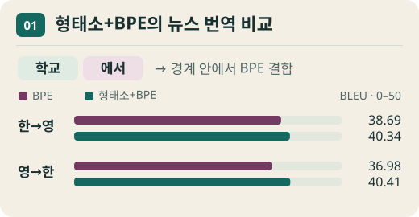
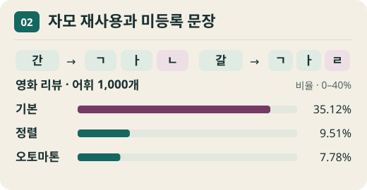
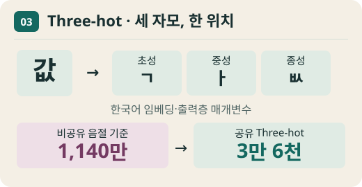
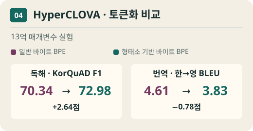
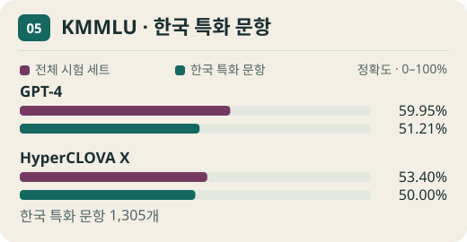

한국어는 ‘학교’, ‘학교에’, ‘학교에서’처럼 어근에 조사가 붙습니다. 형태소 분석은 이런 경계를 먼저 찾고, BPE는 주어진 경계 안에서 자주 이웃한 단위를 합쳐 하위 단어를 만듭니다.

그림 1. 한국어 어휘 32K에서 두 방식의 번역 점수를 비교합니다. BLEU는 번역과 참조문 사이의 표현 일치를 평가하는 지표입니다.
실험 방법 AI Hub 뉴스 한영 번역에서는 한국어 쪽 토큰화와 어휘 크기를 바꾸되 영어 쪽은 32K BPE로 고정했습니다. 자연어 이해는 토큰화 방식별로 BERT-Base를 사전학습한 뒤 문장 관계, 감정, 독해 등의 과제에 맞춰 각각 미세 조정했습니다.
관찰 결과 같은 한국어 32K 어휘에서 형태소+BPE는 BPE만 썼을 때보다 한→영 BLEU 38.69→40.34, 영→한 36.98→40.41을 기록했습니다. 반면 독해 KorQuAD 개발 세트에서는 BPE 64K가 F1 86.66으로 가장 높았습니다.
해석 범위 번역 BLEU와 독해 F1은 다른 지표입니다. 이 결과는 뉴스 번역과 논문에서 사용한 BERT 실험의 조건에서 토큰화 선택이 과제마다 달라질 수 있음을 보여 줍니다.
그림은 원문의 실험 수치와 개념을 바탕으로 새로 그렸습니다. Park 등 · AACL 2020 원문 · §4–5 · 표 3·6
‘간’과 ‘갈’을 각각 외우는 대신, 둘에 공통인 ㄱ·ㅏ를 재사용할 수 있습니다. 자모 쌍 인코딩(JPE)은 한글을 자모로 풀어 SentencePiece가 음절 내부와 경계 주변의 반복 패턴을 학습하게 합니다.

그림 2. 자모 공유 예시와 영화 리뷰의 미등록 문장 비율을 함께 보여 줍니다. 막대가 짧을수록 미등록 항목이 적습니다.
실험 방법 정렬 방식은 받침 없는 음절에 자리표를 넣어 복원을 단순하게 만듭니다. 오토마톤 방식은 일부 자리표를 생략하고 상태 전이로 음절을 복원합니다. 논문의 SentencePiece 실험은 위키와 영화 리뷰에서 모은 문장으로 어휘를 학습하고, 여러 텍스트에서 미등록 항목이 생기는 빈도를 비교했습니다.
관찰 결과 전체 어휘 1,000개 설정에서 미등록 항목이 하나 이상 나온 영화 리뷰 문장은 기본 방식 35.12%, 정렬 방식 9.51%, 오토마톤 방식 7.78%였습니다. 같은 어휘 예산에서 자모 재사용으로 더 많은 문자열을 처리한 사례입니다.
해석 범위 어휘표에 저장한 항목 수, 한 문장을 처리하는 데 든 토큰 수, 모델의 과제 정확도는 각각 측정해야 합니다. 이 그래프는 미등록 항목이 생긴 문장의 비율만 보여 줍니다.
그림은 원문의 실험 수치와 개념을 바탕으로 새로 그렸습니다. Moon·Okazaki · LREC 2020 원문 · §4–5 · 표 5
음절마다 벡터를 만들면 현대 한글 음절 11,172개를 담아야 합니다. 초성·중성·종성을 세 위치로 풀어 쓰면 어휘는 작아지지만 문장은 길어집니다. Three-hot은 자모 벡터를 재사용하면서 세 자모를 한 음절 위치에서 처리합니다.

그림 3. 예시 음절 ‘값’의 세 자모를 한 자리에 묶습니다. 아래 숫자는 표 2의 한국어 임베딩·출력층 합계입니다.
실험 방법 입력에서는 세 자모의 벡터를 합합니다. 출력에서는 같은 음절 안에서 앞서 고른 자모에 조건을 걸어 다음 자모를 고릅니다. 저자들은 입력과 출력의 가중치를 공유하고, 자모를 잇는 신경망에 대각행렬을 써서 추가 매개변수를 줄였습니다.
관찰 결과 영→한 뉴스 번역에서 비공유 음절 기준 모델의 한국어 쪽 임베딩·출력층 합계는 1,140만 개였습니다. 공유 three-hot의 초성→중성→종성 설정은 3만 6천 개였고, BLEU는 14.1과 14.0, chrF는 38.1과 38.0으로 비슷했습니다.
해석 범위 매개변수 수치는 한국어 출력 쪽의 임베딩과 디코딩에 해당합니다. 같은 논문에서 자모를 서로 독립적으로 예측한 방식은 BLEU 8.3(공유 설정)에 그쳐, 자모 사이의 조건부 관계가 중요했습니다.
그림은 원문의 실험 수치와 개념을 바탕으로 새로 그렸습니다. Cognetta 등 · EACL 2023 원문 · §2–5 · 표 2
2021년 HyperCLOVA는 블로그, 커뮤니티, 뉴스, 댓글 등으로 구성한 한국어 중심 말뭉치를 사용했습니다. 논문 표 1의 전체 말뭉치는 5,618억 토큰, 가장 큰 모델은 820억 매개변수였습니다.

그림 4. 13억 매개변수 모델에서 일반 바이트 BPE와 형태소 기반 바이트 BPE를 비교했습니다.
실험 방법 형태소를 고려한 바이트 BPE는 띄어쓰기와 형태소 경계로 먼저 나눈 조각 안에서 바이트 결합을 학습합니다. 연구진은 13억 매개변수 모델에서 형태소 기반 바이트 BPE, 일반 바이트 BPE, 문자 BPE를 비교했습니다.
관찰 결과 KorQuAD F1은 일반 바이트 BPE 70.34에서 형태소 기반 72.98로 올랐습니다. 같은 표에서 한→영 BLEU는 4.61에서 3.83으로 내려갔습니다. 그림은 평가 점수의 단위와 과제를 나눠 표시합니다.
해석 범위 13억 모델의 토큰화 비교는 820억 모델 전체의 효과와 구분해야 합니다. 데이터 출처, 토큰화, 모델 규모가 함께 바뀌는 모델 간 비교에서는 개별 요인의 효과를 따로 추정하기 어렵습니다.
그림은 원문의 실험 수치와 개념을 바탕으로 새로 그렸습니다. Kim 등 · EMNLP 2021 원문 · §3·§4.4 · 표 1·2·6
KMMLU는 번역 문제 대신 한국어로 출제된 자격시험·적성시험 등의 문항을 모았습니다. 논문의 평가용 시험 세트는 인문·사회와 과학·공학 등을 아우르는 45개 분야 35,030개 객관식 문항입니다.

그림 5. 두 모델의 KMMLU 전체 시험 세트와 한국 특화 문항 묶음 정확도를 나란히 그렸습니다.
실험 방법 연구진은 중복이나 형식 오류를 걸러 내고 답지를 네 개로 맞췄습니다. 별도로 1,305문항을 선별한 KMMLU-KOR에서는 한국의 역사·제도처럼 지역 맥락이 필요한 지식을 살폈습니다.
관찰 결과 논문에서 GPT-4의 정확도는 전체 59.95%에서 한국 특화 문항 51.21%로 8.74%p 낮아졌습니다. HyperCLOVA X는 53.40%에서 50.00%로 3.40%p 낮아졌습니다. 두 모델의 격차는 한국 특화 문항에서 좁아졌습니다.
해석 범위 서로 다른 난이도와 구성을 가진 문항 묶음의 비교입니다. 점수 차이는 당시 평가한 모델에 해당하며, 한국어 사전학습만의 효과나 존댓말·대화 품질을 직접 측정하지는 않습니다.
그림은 원문의 실험 수치와 개념을 바탕으로 새로 그렸습니다. Son 등 · NAACL 2025 원문 · §3·§6.2 · 표 2·6
같은 모델을 비교하려면 무엇을 재야 할까?
형태소 경계는 문장을 자르는 기준 , 자모 공유는 문자를 저장하고 예측하는 방식 , 한국어 원문 시험은 모델을 평가하는 기준 입니다. 같은 문장을 같은 모델 조건에서 비교한다면 어휘 항목 수, 문장당 토큰 수, 임베딩·출력층 규모, 과제 점수를 따로 기록할 수 있습니다.
유니코드에서 한글이 어떻게 분해되는지 실험하기 →